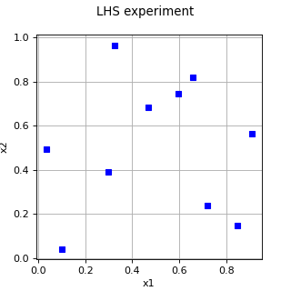
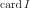
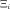
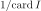

LHSExperiment¶
(Source code, png, hires.png, pdf)

-
class
LHSExperiment(*args)¶ LHS experiment.
- Available constructors:
LHSExperiment(size, alwaysShuffle, randomShift)
LHSExperiment(distribution, size, alwaysShuffle, randomShift)
- Parameters
- distribution
Distribution Distribution
 with an independent copula used to generate the
set of input data.
with an independent copula used to generate the
set of input data.- sizepositive int
Number

of points that will be generated in the experiment.- alwaysShufflebool
Flag to tell if the shuffle must be regenerated at each call to generate or not. Default is False: the shuffle is generated once and for all.
- randomShiftbool
Flag to tell if the point selected in each cell of the shuffle is the center of the cell (randomshift is False) or if it is drawn wrt the restriction of the distribution to the cell. Default is True.
- distribution
See also
Notes
LHSExperiment is a random weighted design of experiments. The method generates a sample of points

according to the distribution with the LHS technique: some cells are determined,
with the same probabilistic content according to the distribution, each line
and each column contains exactly one cell, then points are selected among these
selected cells. The weights associated to the points are all equal to

. When recalled, thegenerate()method generates a new sample: the point selection within the cells changes but not the cells selection. To change the cell selection, it is necessary to create a new LHS Experiment.Examples
Create an LHSExperiment:
>>> import openturns as ot
Generate the sample reusing the initial shuffle and using a random shift:
>>> ot.RandomGenerator.SetSeed(0) >>> experiment = ot.LHSExperiment(ot.Normal(2), 5, False, True) >>> print(experiment.generate()) [ X0 X1 ] 0 : [ 0.887671 -0.647818 ] 1 : [ 0.107683 1.15851 ] 2 : [ 0.453077 -1.04742 ] 3 : [ -0.928012 0.409732 ] 4 : [ -0.290539 0.16153 ] >>> print(experiment.generate()) [ X0 X1 ] 0 : [ 1.52938 -0.343515 ] 1 : [ -0.0703427 2.36353 ] 2 : [ 0.576091 -1.79398 ] 3 : [ -2.11636 0.619315 ] 4 : [ -0.699601 -0.0570674 ]
Generate the sample using a new shuffle and a random shift:
>>> ot.RandomGenerator.SetSeed(0) >>> experiment = ot.LHSExperiment(ot.Normal(2), 5, True, True) >>> print(experiment.generate()) [ X0 X1 ] 0 : [ 0.887671 -0.647818 ] 1 : [ 0.107683 1.15851 ] 2 : [ 0.453077 -1.04742 ] 3 : [ -0.928012 0.409732 ] 4 : [ -0.290539 0.16153 ] >>> print(experiment.generate()) [ X0 X1 ] 0 : [ -1.72695 -0.591043 ] 1 : [ -0.240653 -0.0406593 ] 2 : [ 0.828719 2.12547 ] 3 : [ 2.37061 0.508903 ] 4 : [ -0.668296 -1.11573 ]
Generate the sample reusing the initial shuffle and using a constant shift:
>>> ot.RandomGenerator.SetSeed(0) >>> experiment = ot.LHSExperiment(ot.Normal(2), 5, False, False) >>> print(experiment.generate()) [ X0 X1 ] 0 : [ 1.28155 -0.524401 ] 1 : [ 0 1.28155 ] 2 : [ 0.524401 -1.28155 ] 3 : [ -1.28155 0.524401 ] 4 : [ -0.524401 0 ] >>> print(experiment.generate()) [ X0 X1 ] 0 : [ 1.28155 -0.524401 ] 1 : [ 0 1.28155 ] 2 : [ 0.524401 -1.28155 ] 3 : [ -1.28155 0.524401 ] 4 : [ -0.524401 0 ]
Generate the sample using a new shuffle and using a constant shift:
>>> ot.RandomGenerator.SetSeed(0) >>> experiment = ot.LHSExperiment(ot.Normal(2), 5, True, False) >>> print(experiment.generate()) [ X0 X1 ] 0 : [ 1.28155 -0.524401 ] 1 : [ 0 1.28155 ] 2 : [ 0.524401 -1.28155 ] 3 : [ -1.28155 0.524401 ] 4 : [ -0.524401 0 ] >>> print(experiment.generate()) [ X0 X1 ] 0 : [ 0.524401 -0.524401 ] 1 : [ 0 1.28155 ] 2 : [ -1.28155 0 ] 3 : [ -0.524401 0.524401 ] 4 : [ 1.28155 -1.28155 ]
Methods
ComputeShuffle(dimension, totalSize)Generate a new cell randomization for external use.
generate(self)Generate points according to the type of the experiment.
generateWithWeights(self)Generate points and their associated weight according to the type of the experiment.
getAlwaysShuffle(self)Cell randomization flag accessor.
getClassName(self)Accessor to the object’s name.
getDistribution(self)Accessor to the distribution.
getId(self)Accessor to the object’s id.
getName(self)Accessor to the object’s name.
getRandomShift(self)Randomization flag accessor.
getShadowedId(self)Accessor to the object’s shadowed id.
getShuffle(self)Return the cell randomization.
getSize(self)Accessor to the size of the generated sample.
getVisibility(self)Accessor to the object’s visibility state.
hasName(self)Test if the object is named.
hasUniformWeights(self)Ask whether the experiment has uniform weights.
hasVisibleName(self)Test if the object has a distinguishable name.
setAlwaysShuffle(self, alwaysShuffle)Cell randomization flag accessor.
setDistribution(self, distribution)Accessor to the distribution.
setName(self, name)Accessor to the object’s name.
setRandomShift(self, randomShift)Randomization flag accessor.
setShadowedId(self, id)Accessor to the object’s shadowed id.
setSize(self, size)Accessor to the size of the generated sample.
setVisibility(self, visible)Accessor to the object’s visibility state.
generateStandard
-
__init__(self, \*args)¶ Initialize self. See help(type(self)) for accurate signature.
-
static
ComputeShuffle(dimension, totalSize)¶ Generate a new cell randomization for external use.
- Parameters
- dimensionpositive int
Number of input dimension.
- totalSizepositive int
Number of points that need to be shuffled.
- Returns
- shuffle
Matrix For each point, the indices of the shuffled components.
- shuffle
-
generate(self)¶ Generate points according to the type of the experiment.
- Returns
- sample
Sample Points
 which constitute the design of experiments
with
which constitute the design of experiments
with  . The sampling method is defined by the nature of
the weighted experiment.
. The sampling method is defined by the nature of
the weighted experiment.
- sample
Examples
>>> import openturns as ot >>> ot.RandomGenerator.SetSeed(0) >>> myExperiment = ot.MonteCarloExperiment(ot.Normal(2), 5) >>> sample = myExperiment.generate() >>> print(sample) [ X0 X1 ] 0 : [ 0.608202 -1.26617 ] 1 : [ -0.438266 1.20548 ] 2 : [ -2.18139 0.350042 ] 3 : [ -0.355007 1.43725 ] 4 : [ 0.810668 0.793156 ]
-
generateWithWeights(self)¶ Generate points and their associated weight according to the type of the experiment.
- Returns
Examples
>>> import openturns as ot >>> ot.RandomGenerator.SetSeed(0) >>> myExperiment = ot.MonteCarloExperiment(ot.Normal(2), 5) >>> sample, weights = myExperiment.generateWithWeights() >>> print(sample) [ X0 X1 ] 0 : [ 0.608202 -1.26617 ] 1 : [ -0.438266 1.20548 ] 2 : [ -2.18139 0.350042 ] 3 : [ -0.355007 1.43725 ] 4 : [ 0.810668 0.793156 ] >>> print(weights) [0.2,0.2,0.2,0.2,0.2]
-
getAlwaysShuffle(self)¶ Cell randomization flag accessor.
- Returns
- alwaysShufflebool
Flag to tell if the shuffle must be regenerated at each call to generate or not. Default is False: the shuffle is generated once and for all.
-
getClassName(self)¶ Accessor to the object’s name.
- Returns
- class_namestr
The object class name (object.__class__.__name__).
-
getDistribution(self)¶ Accessor to the distribution.
- Returns
- distribution
Distribution Distribution used to generate the set of input data.
- distribution
-
getId(self)¶ Accessor to the object’s id.
- Returns
- idint
Internal unique identifier.
-
getName(self)¶ Accessor to the object’s name.
- Returns
- namestr
The name of the object.
-
getRandomShift(self)¶ Randomization flag accessor.
- Returns
- randomShiftbool
Flag to tell if the point selected in each cell of the shuffle is the center of the cell (randomshift is False) or if it is drawn wrt the restriction of the distribution to the cell. Default is True.
-
getShadowedId(self)¶ Accessor to the object’s shadowed id.
- Returns
- idint
Internal unique identifier.
-
getShuffle(self)¶ Return the cell randomization.
- Returns
- shuffle
Matrix For each point, the indices of the shuffled components.
- shuffle
-
getSize(self)¶ Accessor to the size of the generated sample.
- Returns
- sizepositive int
Number
 of points constituting the design of experiments.
of points constituting the design of experiments.
-
getVisibility(self)¶ Accessor to the object’s visibility state.
- Returns
- visiblebool
Visibility flag.
-
hasName(self)¶ Test if the object is named.
- Returns
- hasNamebool
True if the name is not empty.
-
hasUniformWeights(self)¶ Ask whether the experiment has uniform weights.
- Returns
- hasUniformWeightsbool
Whether the experiment has uniform weights.
-
hasVisibleName(self)¶ Test if the object has a distinguishable name.
- Returns
- hasVisibleNamebool
True if the name is not empty and not the default one.
-
setAlwaysShuffle(self, alwaysShuffle)¶ Cell randomization flag accessor.
- Parameters
- alwaysShufflebool
Flag to tell if the shuffle must be regenerated at each call to generate or not. Default is False: the shuffle is generated once and for all.
-
setDistribution(self, distribution)¶ Accessor to the distribution.
- Parameters
- distribution
Distribution Distribution used to generate the set of input data.
- distribution
-
setName(self, name)¶ Accessor to the object’s name.
- Parameters
- namestr
The name of the object.
-
setRandomShift(self, randomShift)¶ Randomization flag accessor.
- Parameters
- randomShiftbool
Flag to tell if the point selected in each cell of the shuffle is the center of the cell (randomshift is False) or if it is drawn wrt the restriction of the distribution to the cell. Default is True.
-
setShadowedId(self, id)¶ Accessor to the object’s shadowed id.
- Parameters
- idint
Internal unique identifier.
-
setSize(self, size)¶ Accessor to the size of the generated sample.
- Parameters
- sizepositive int
Number
of points constituting the design of experiments.
-
setVisibility(self, visible)¶ Accessor to the object’s visibility state.
- Parameters
- visiblebool
Visibility flag.
 associated with the points. By default,
all the weights are equal to
associated with the points. By default,
all the weights are equal to  .
.{kind=link}
{kind=link}